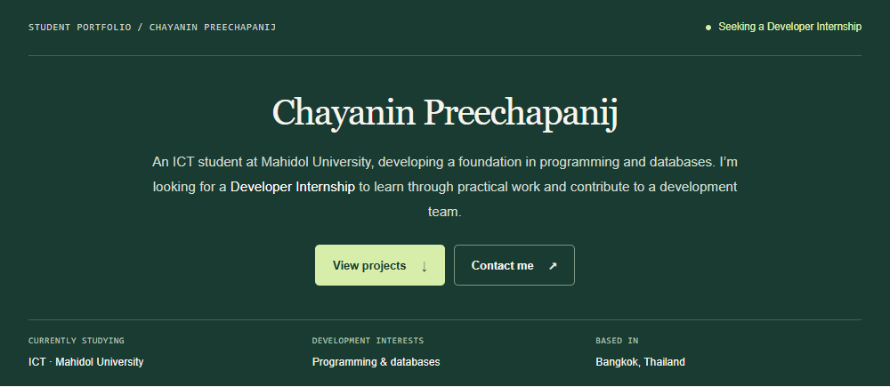

Featured project / 01

Personal portfolio · Web TechnologyWebsite
Personal portfolio
A responsive, two-page website presenting my background, skills, and contact details. Includes section navigation and a contact form that prepares an email draft.
- HTML
- CSS
- Vanilla JavaScript
View live website
Source link not yet added